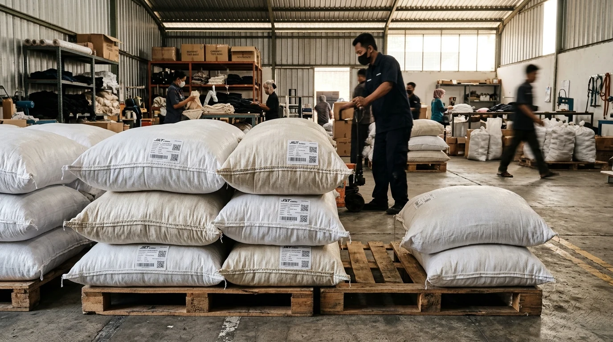

Pengiriman Goodie Bag ke Seluruh Indonesia
Dari workshop konveksi kami di Kota Malang, ribuan pesanan goodie bag dan tas seminar kit didistribusikan ke 38 provinsi di seluruh Nusantara dengan proteksi pengemasan ekstra dobel karung kedap air serta jaringan kargo terpercaya.
Jangkauan Pengiriman Luar Kota & Luar Pulau Terpercaya
Lebih dari separuh pemesan goodie bag kami berasal dari luar kota dan luar Pulau Jawa, termasuk kementerian, BUMN, perguruan tinggi, korporasi swasta, hingga panitia kegiatan sekolah di Sumatera, Kalimantan, Sulawesi, Bali, dan Papua.
Untuk memastikan paket tiba sebelum hari pelaksanaan kegiatan, kami memisahkan alur secara ketat antara waktu pengerjaan produksi (7–14 hari kerja) dengan waktu tempuh ekspedisi kargo. Setelah seluruh produk lolos proses Quality Control ketat dan pembayaran sisa pelunasan 50% diselesaikan, paket langsung diserahterimakan ke ekspedisi kargo rekanan.

Standar Pengemasan Berlapis: Inner Plastik & Karung Koli Jahit Rapat
Goodie bag adalah produk kain yang sensitif terhadap rembesan air hujan, debu jalanan, dan gesekan selama transit di gudang kargo. Kami menerapkan sistem perlindungan 3 lapis standar ekspedisi:
1. Inner Plastik Kedap Air
Tas ditata rapi per 12 pcs (1 lusin) lalu dimasukkan ke dalam kantong plastik tebal kedap air dan diikat kencang. Menjaga permukaan tas tetap bersih, steril, dan bebas dari debu lembap selama di perjalanan.
2. Karung Koli Jahit Rapat
Seluruh bundel lusinan dikemas ke dalam karung koli tebal luar berkapasitas besar. Ujung karung dijahit mesin/jarum goni dengan benang nilon rapat sehingga tidak bergeser atau robek saat dibongkar-muat di depo kargo.
3. Label Manifest & Nomor Koli
Setiap karung ditempeli lembar manifest tahan air: memuat nama instansi penerima, alamat detail acara, kontak PIC aktif, dan penomoran koli (contoh: Koli 1 dari 4) agar paket tidak tercecer di cabang kargo.

Mitra Ekspedisi Kargo Rekanan Resmi
Untuk pesanan partai mulai dari minimum order 50 pcs hingga ribuan pcs, pengiriman melalui kargo tarif koli dan volumetrik jauh lebih ekonomis dibanding kurir reguler kiloan retail:
Indah Logistik Cargo
Jaringan terluas darat dan laut ke seluruh pelosok kabupaten di Sumatera, Jawa, Kalimantan, dan Sulawesi dengan tarif koli sangat hemat.
Baraka Sarana Tama
Spesialis jalur darat cepat lintas Jawa, Madura, Bali, dan Sumatera dengan armada truk boks tertutup berjadwal harian ketat.
Dakota Cargo
Layanan kargo darat ekonomis dengan timbangan minimum bersahabat untuk pesanan skala menengah (50 hingga 300 pcs).
J&T Cargo & JTR (JNE Trucking)
Pelacakan digital real-time melalui website dan aplikasi hingga ke tingkat kecamatan dengan integrasi status manifest otomatis.
Kalog (Kereta Api Logistik)
Pengiriman kilat stasiun-ke-stasiun antar kota di Pulau Jawa dengan kepastian jadwal 1–2 hari kerja sampai tanpa kendala macet.
TAM Cargo & Ekspedisi Khusus
Pengiriman partai besar kargo kubikasi laut (kontainer LCL/FCL) untuk kebutuhan kepulauan Maluku, Papua, dan Nusa Tenggara Timur.
Estimasi Waktu Tempuh Pengiriman (Lead Time Kargo)
Waktu tempuh dihitung sejak barang diserahkan ke loket kargo di Kota Malang setelah tahap Quality Control dan pelunasan 50% diselesaikan:
| Wilayah Tujuan | Jalur Ekspedisi | Estimasi Durasi Sampai |
|---|---|---|
|
Jawa Timur & Madura
Surabaya, Sidoarjo, Kediri, Madiun, dsb.
|
Darat / Truk Boks | 1 – 2 Hari Kerja |
|
Jawa Tengah, DIY, & Jabodetabek / Jabar
Semarang, Solo, Jogja, Bandung, Jakarta, Bekasi
|
Darat (Truk) / Kereta Api Logistik | 1 – 3 Hari Kerja |
|
Bali & Nusa Tenggara Barat (Lombok)
Denpasar, Badung, Mataram, dsb.
|
Darat & Feri Penyeberangan | 2 – 4 Hari Kerja |
|
Sumatera
Lampung, Palembang, Medan, Pekanbaru, Padang
|
Darat & Laut (Truk Lintas) | 3 – 5 Hari Kerja |
|
Kalimantan
Balikpapan, Banjarmasin, Pontianak, Samarinda
|
Kargo Kapal Cepat / Udara | 4 – 7 Hari Kerja |
|
Sulawesi
Makassar, Manado, Palu, Kendari
|
Kargo Kapal Cepat / Udara | 4 – 7 Hari Kerja |
|
Maluku, Papua, & Nusa Tenggara Timur
Ambon, Jayapura, Kupang, Sorong
|
Kargo Laut Reguler / Port-to-Port Udara | 6 – 10 Hari Kerja |
Pelacakan Resi Aktif & Koordinasi Real-Time
Transparansi pengiriman adalah kunci kenyamanan panitia acara. Begitu paket goodie bag selesai ditimbang dan terdaftar di sistem ekspedisi kargo, tim kami segera membagikan:
Foto Dokumentasi Koli
Foto tampak luar karung yang sudah berjahit rapat dan berlabel manifest jelas sebelum dinaikkan ke armada kargo.
Foto Resi & Surat Jalan
Lembar bukti serah terima resmi dari pihak ekspedisi yang memuat nomor Surat Tanda Terima (STT) atau Air Waybill (AWB).
Tautan Pelacakan Online
Link cek resi langsung untuk memantau posisi pergerakan armada kargo secara real-time hingga paket tiba di alamat tujuan Anda.
Pertanyaan Umum Seputar Pengiriman (FAQ)
Rencanakan Pengiriman Kargo Goodie Bag Anda Sekarang
Konsultasikan tujuan kota pengiriman, estimasi berat koli, serta batas tanggal acara Anda kepada tim layanan kami. Kami bantu pilihkan opsi ekspedisi kargo paling cepat, aman, dan hemat ongkos kirim.